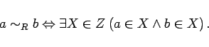

Inhalt Index DeskTop Bronstein

 Algebra und Diskrete Mathematik Mengenlehre Äquivalenz- und Ordnungsrelationen Äquivalenzklassen, Zerlegungen
Algebra und Diskrete Mathematik Mengenlehre Äquivalenz- und Ordnungsrelationen Äquivalenzklassen, Zerlegungen


Jede Äquivalenzrelation R in einer Menge A bewirkt eine Zerlegung Z von A, nämlich Z =A /R. Umgekehrt bestimmt jede Zerlegung Z einer Menge A eine Äquivalenzrelation R in A:
|  | (5.91) |
Man kann eine Äquivalenzrelation in einer Menge A als Verallgemeinerung der Gleichheitsbeziehung auffassen, wobei von ,,unwesentlichen`` Eigenschaften der Elemente von A abstrahiert wird und Elemente, die sich bezüglich einer gewissen Eigenschaft nicht unterscheiden, zu einer Äquivalenzklasse zusammengefaßt werden.